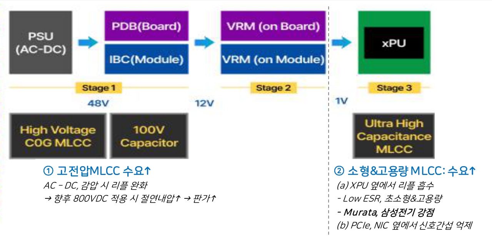
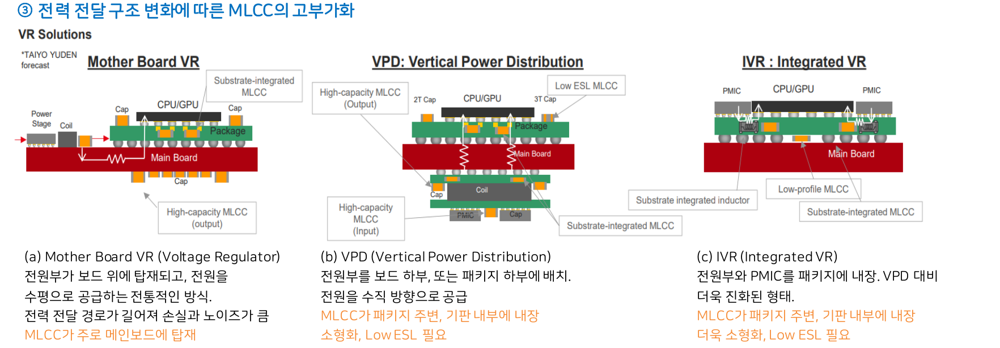

전기전자 MLCC와 수동부품 — AI 서버가 범용 공급까지 빨아들이는 사이클
원천 한계
- 전기전자 원천 166건(산업물 66건) 중 MLCC를 본격적으로 다룬 리포트 35건. 실제 기간은 2025-10-27~2026-11-19
- 연도 분포: 2025년 6건 · 2026년 160건. MLCC물 35건 중 23건이 2026년 10~11월(3분기 실적 시즌) → 상반기 이전은 연간·반기 전망 위주로 얇음
- 리드타임·유통가는 iM 「MLCC Tracker」(TTI·Digi-Key·Future Electronics 표본) 의존도가 큼 → 표본 품목 기준 숫자임
한눈에 보기
결론
- AI 서버 1랙의 MLCC가 일반 서버의 수백 배로 늘고, 고용량품은 범용 대비 캐파를 3배 소모함 → 선두 2사(Murata·삼성전기)의 캐파가 서버로 빨려 들어감
- 그 결과 가격은 «범용·유통 → 직납 → LTA» 순으로 번짐. 2026년 2선 업체 유통가 인상 → 6~8월 삼성전기 유통 20~30% → 4Q26 직납 → 10월 Murata 레거시 인상
- 공급 부족 종료 시점은 하우스마다 다름(2027년 초 정점 vs 2029년까지 부족). 판단 근거는 리드타임·Murata BB율·LTA 가격 조건
| 항목 | 값 | 비교 | 출처 |
|---|---|---|---|
| AI서버 MLCC 리드타임 | 38주 | 균형 12주의 약 3배 | (iM, 2026-11-13) |
| 서버용 MLCC 시장 2025 | 1.1조원 | 전체 ~19조원의 5% | (iM, 2026-06-02) |
| 서버용 2030(Bull) | 8.2조원 | 전체의 25%, CAGR +50% | (iM, 2026-06-02) |
| Murata DC 매출 가이던스 | 4,250억엔 | 4월 3,250 → 10월 상향 | (iM, 2026-11-02) |
| 서버 vs 범용 캐파 교환비 | 1:3 | 단위 캐파당 이익 6.4배 | (iM, 2026-11-02) |
flowchart LR A["AI GPU·ASIC<br/>전력·다이 수↑"] --> B["랙당 MLCC<br/>수십만 개"] B --> C["고용량·고압 수요<br/>적층↑·박막↓"] C --> D["캐파 잠식<br/>교환비 1:3"] D --> E["선두 2사<br/>범용 생산 축소"] E --> F["범용 주문<br/>대만·중국 이전"] F --> G["2선 가동률↑<br/>유통가 인상"] G --> H["직납·LTA<br/>가격 상향"] D --> I["리드타임<br/>20 → 60주"] I --> H
구성: iM(2026-06-02·10-21·11-02)·키움(2025-11-25)·삼성전기 컨콜 정리 메리츠(2026-10-28) 내용을 엮음
- 관련 노트: 00_전기전자_index · 01_전기전자_용어집 · 02_전기전자_수요와전방 · 04_전기전자_PCB와기판 · 05_전기전자_가전과공조 · 06_전기전자_시장규모모델 · 07_전기전자_하우스시각_변경이력 · 08_전기전자_트래킹캘린더
① 기초: MLCC와 수동부품
요약
- MLCC = 유전체와 내부전극을 수백 층 쌓은 칩 커패시터. 전원 안정화(리플 흡수)·노이즈 제거가 일
- 고용량화는 «층을 더 쌓고 유전체를 더 얇게» → 같은 설비로 만들 수 있는 개수가 줄어듦
- 시장은 Murata 1강 + 삼성전기 2위. AI 서버용 고사양은 두 회사 과점
MLCC가 하는 일
| 위치 | 하는 일 | 필요한 특성 |
|---|---|---|
| 전원 입력단(PSU·48V) | 감압 때 리플 완화 | 고전압·절연내압 |
| 칩 바로 옆(xPU 코어) | 순간 전류 공급·전압 유지 | 초소형·초고용량·Low ESR |
| 고속 신호선(PCIe·NIC) | 신호 간섭 억제·DC 차단 | 고주파 특성 |
| 차량 ADAS·파워트레인 | 센서·SoC 전원 안정 | 고온·고압·고신뢰 |
자료: iM(2026-06-02 p.33)·키움(2025-11-25 p.25) 정리
일반 MLCC vs 고용량 MLCC
| 구분 | 일반 MLCC | 고용량 MLCC |
|---|---|---|
| 주요 적용처 | IT 기기 | 서버·네트워크·전장 |
| 전극 적층 수 | 50~200층 | 300~1,000층 이상 |
| 유전체 두께 | 1.0~2.0μm | 0.4~1.0μm |
| 주요 크기 | 0402·0603 | 0805·1206·1210 |
| 정전용량 | 10nF~10μF | 10μF~100μF 이상 |
| 정격전압 | 6.3~25V | 25~1,000V |
(키움, 2025-11-25 p.27)
- 고용량품 생산성은 일반품의 40~60% 수준 (키움, 2025-11-25)
- 크기·높이를 고정한 채 용량만 키우면 층간 두께를 더 얇게 해야 함 → 난이도·가격 동반 상승 (iM, 2026-06-19)
- 서버용 MLCC의 제조 리드타임은 범용의 2~3배 (iM, 2026-06-19; iM, 2026-06-02)
수동부품 범위 — MLCC 밖의 품목
| 품목 | 2026년 움직임 | 출처 |
|---|---|---|
| 탄탈 커패시터 | AI 서버·ASIC용 부족 → 20~30% 인상 | (iM, 2026-10-21) |
| 고분자 알루미늄(SP-Cap) | GPU 가속기용 수요 → 5~30% 인상 | (iM, 2026-10-21) |
| 인덕터·페라이트 비드 | 은 가격 급등 → 인상 | (iM, 2026-10-21) |
| 칩저항 | 귀금속 가격 → 10~20% 인상 | (iM, 2026-10-21) |
| 알루미늄 전해(PSU용) | 데이터센터 문의 급증·증설 준비 | (키움, 2025-11-25) |
| 실리콘 커패시터 | 칩 근접 전원용 신규 품목 | (메리츠, 2026-10-28) |
- 이번 사이클은 MLCC 단독이 아니라 «AI 서버 전원부 수동부품 전반»의 부족 → 원재료(은·팔라듐) 상승이 인상 명분을 보탬
업체 구도
| 구분 | Murata | 삼성전기 | Taiyo Yuden | TDK | Yageo |
|---|---|---|---|---|---|
| 전체 점유율(2025) | 40% | 20~25% | 10~12% | 10~12% | 8~10% |
| AI 서버용 점유율 | 40~50% | 40~50% | ⚠ | ⚠ | ⚠ |
| 고부가 점유율 | 40~50% | 35~40% | ⚠ | ⚠ | ⚠ |
전체·AI(키움, 2025-11-25; iM, 2026-06-02) / 고부가(신한, 2026-05-28). 신한은 Murata 전체 점유율을 35~40%로 봄
- 상위 5사가 글로벌 MLCC 캐파의 약 70% (키움, 2025-11-25)
- AI 서버용은 Murata+삼성전기 합산 약 90% → 사실상 2강 (키움, 2025-11-25)
- 2선(대만 Yageo·Walsin, 중국 Fenghua·CCTC·Viiyong)은 범용·유통 비중이 높아 가격 결정이 빠름 (iM, 2026-04-22)
- 국내 2선: 삼화콘덴서·아모텍. 아모텍은 광대역 커패시터(광트랜시버용)로 AI 진입 시도 (iM, 2026-06-02)
② 전방 수요: 응용처별
요약
- 금액 기준 IT 42% · 전장 21% · 서버 5%(2025). 서버가 2030년 25%까지 커질 전망(Bull)
- 서버 수요는 «개수»보다 «용량»이 더 빨리 늘어남 → 고용량품 비중 급증이 핵심
- IT(스마트폰·PC)는 물량 정체, 전장은 ADAS·48V로 꾸준한 두 자릿수
응용처 구성의 변화
| 응용처 | 2025 | 2030(Bull) | 연평균 | 출처 |
|---|---|---|---|---|
| IT | 8.1조원 | 10.3조원 | +5% | (iM, 2026-06-02) |
| 전장 | 5.9조원 | 9.7조원 | +10% | (iM, 2026-06-02) |
| 기타 | 4.1조원 | 5.2조원 | +5% | (iM, 2026-06-02) |
| 서버 | 1.1조원 | 8.2조원 | +50% | (iM, 2026-06-02) |
| 합계 | ~19조원 | 33조원 | +12% | (iM, 2026-06-02) |
그림42 범례 색 대조로 판독(전장 5.9→9.7, 기타 4.1→5.2) — 06 모델 값과 일치
아래 선 = Base(CAGR +40%), 위 선 = Bull(+50%). 자료: iM(2026-06-02 p.29). 4월 보고서의 Base는 2030년 4.0조원(CAGR +30%)이었음 → ⑥
- IT 비중: 2017~18년 70~75% → 2025년 약 50%(수량 기준) (키움, 2025-11-25)
- Murata 전망 기준 데이터센터 비중은 전체 MLCC 시장의 5%(2025) → 12%(2026) → 23%(2027) (iM, 2026-11-02)
AI 서버: 탑재량이 세대마다 뛴다
| 플랫폼 | 단위 | MLCC 수량 | H100 대비 |
|---|---|---|---|
| 일반 서버 | 1대 | 2,000개 | — |
| Hopper(HGX H100) | 8-GPU 서버 | 2만개+ | 1배 |
| Blackwell GB200 | NVL36 랙 | ~23.4만개 | ~10배 |
| Blackwell GB200 | NVL72 랙 | ~44.1만개 | ~21배 |
| Rubin VR200 | NVL72 랙 | 50~60만개 | 25~30배 |
| Rubin Ultra | NVL576 랙 | ~180만개(추정) | ~90배 |
(iM, 2026-04-22 p.18; iM, 2026-06-02 p.32). 보드 기준으론 GB200 약 6,500개 → Rubin 약 12,000개(TrendForce 인용, iM 2026-06-02)
| 비교(삼성전기 자료) | 일반 서버 | AI 서버 | 배수 |
|---|---|---|---|
| 소비 전력(W) | 2,000 | 15,000 | 6.5~7배 |
| MLCC 수량(개) | 2,200 | 28,000 | 13배 |
| 정전용량(μF) | 22,000 | 600,000 | 27배 |
(한투, 2025-11-27; 신한, 2025-11-20)
- VR은 직전 GB 대비 MLCC가 +14~36% 더 탑재 (iM, 2026-06-19)
- 랙 전력: H100 10.2kW → GB200 NVL72 120kW → VR NVL72 200kW+ → VR Ultra 600kW+ (iM, 2026-06-02)
- 반대 시각: Murata는 «차세대 GPU로 MLCC 개수가 폭발적으로 늘진 않고, 개당 용량이 커지는 것»이라고 설명 (키움, 2025-11-25) → 수량 TAM보다 용량·ASP 축으로 봐야 함
AI MLCC 법칙 — 용량이 매년 2배
| 연도 | AI 칩 다이 수 | 코어 전원 MLCC 용량 |
|---|---|---|
| 2026 | 2개 | 기준 |
| 2027 | 4개 | 약 2배 |
| 2028~ | 8개 | 다시 약 2배 |
삼성전기 제시, (메리츠, 2026-10-28; 하나, 2026-10-28)
- 주력 품목 1005 47μF의 2027년 수요는 2026년의 약 8배 (메리츠, 2026-10-28)
- 다음 주력 후보: 0603 10μF·1608 100μF 등 소형·초고용량 (메리츠, 2026-10-29)
- 서버 CPU 수요 확산(GPU → CPU·DDR5)도 고용량 탑재를 늘림 (TrendForce 인용, iM 2026-10-21)
서버 밖에서 새로 생긴 수요
| 응용처 | 무엇이 바뀌나 | 규모·시점 |
|---|---|---|
| 광모듈(1.6T) | 모듈당 용량이 스마트폰 수준 | 2027 매출 3배+(삼성전기) |
| 800V DC 데이터센터 | DC-DC에 1kV급 고압 MLCC | OBC와 같은 스펙 |
| 메모리 모듈 | SoCAMM2·DDR6용 고온·저높이 | 표준화 단계 |
| 광트랜시버·DSP | 광대역 커패시터 | 아모텍 2Q26 양산 |
(메리츠, 2026-10-28; iM, 2026-06-02)
전장
| 지표 | 값 | 출처 |
|---|---|---|
| 전장 MLCC 출하 CAGR | +13%(2022~27E) | (키움, 2025-11-25) |
| 전장 MLCC 시장 성장 | 두 자릿수 지속 | (키움, 2025-11-25) |
| 차량당 탑재량 | 내연 < EV < ADAS EV | (키움, 2025-11-25) ⚠ 수치 그래프뿐 |
| 48V용 100V 10μF | 고객 승인·물량 확보 | (메리츠, 2026-10-28) |
(키움, 2025-11-25 p.25). 고온 MLCC는 일본 독점에서 한국 업체가 들어가는 흐름
- 인포테인먼트·ADAS = 고용량, 내연 파워트레인 = 고온, EV 파워트레인 = 고압 (키움, 2025-11-25)
- 12V → 48V 전원 전환은 자동차에서 휴머노이드로 번지는 중 (메리츠, 2026-10-28)
IT(스마트폰·PC)
| 지표 | 값 | 출처 |
|---|---|---|
| IT용 MLCC 출하 2025 | 약 +9% | (키움, 2025-11-25) |
| IT용 출하 CAGR | +5%(2022~27E) | (키움, 2025-11-25) |
| AI폰·AI PC 탑재량 | +10% 이상 | (키움, 2025-11-25) |
| AI폰·AI PC 용량 | +20~40% | (키움, 2025-11-25) |
- 물량은 정체, 4분기 소비자 전자 수요 약세(고유가·인플레·금리) (TrendForce 인용, iM 2026-10-21)
- 메모리 가격 상승 → 세트 원가 부담 → 저용량 소비자용 유통가 약세 (iM, 2026-10-21)
- 그래도 선두 2사의 범용 공급 축소가 더 빨라 범용 리드타임은 계속 늘어남 (iM, 2026-11-13)
- 세트 수요 자체는 02_전기전자_수요와전방 참고
③ 기술 심화
요약
- 전원을 칩에 더 가깝게, 더 낮은 전압으로 바로 내리는 방향(VPD·IVR) → MLCC가 보드 위에서 패키지 밑·기판 속으로 이동
- 요구 특성은 «고용량 + 초소형 + 저ESL + 고압»이 동시에 → 대응 가능한 업체 수가 줄어듦
- 실리콘 커패시터·기판 내장(Embedding)은 MLCC의 보완재이자 새 병목

출처: iM증권, 2026-06-02, p.33 (자료: 삼성전기·Taiyo Yuden)
고전압 MLCC — 입력단
- 무엇: 48V·800V 전원 입력단에서 감압 때 리플을 줄이는 MLCC
- 원리: 유전체를 두껍게·특수 소재(C0G 등)로 → 절연내압 확보
- 기존 대비: 서버 입력이 12V → 48V → 800V DC로 올라가며 1kV급이 필요
- 왜 중요: 절연내압이 오르면 판가도 오름 (iM, 2026-06-02)
- 누가·언제: 자동차 OBC용 1kV급과 같은 스펙 → 전장 라인업 보유 업체 유리 (메리츠, 2026-10-28)
- 모르는 것: 800V DC 랙 채택 시점·물량 ⚠
소형·초고용량 MLCC — 칩 옆
- 무엇: XPU 바로 옆에서 순간 전류를 대는 1005 47μF·1608 100μF 같은 제품
- 원리: 적층 수↑·유전체 박막화·유전율↑ (키움, 2025-11-25)
- 기존 대비: 같은 면적에 더 많은 용량 → 박막·적층 기술이 차별점
- 왜 중요: 개당 이익이 범용의 약 19배(가정 기반 추정) (iM, 2026-11-02)
- 누가·언제: Murata·삼성전기 강점, 2026~27년 공급 확대 (iM, 2026-06-02)
- 모르는 것: 대만·중국 업체의 수율 개선 속도 ⚠ (TrendForce는 «수율 제약으로 공급 확대 제한», iM 2026-10-21)
VPD·IVR — 전원부를 칩 밑으로

출처: iM증권, 2026-06-02, p.33 (자료: 삼성전기·Taiyo Yuden)
| 구조 | 전원부 위치 | MLCC 위치 | 요구 특성 |
|---|---|---|---|
| 보드 VR(기존) | 메인보드 위 수평 | 메인보드 | 고용량 |
| VPD | 보드·패키지 하부 수직 | 패키지 주변·기판 내장 | 소형·Low ESL |
| IVR | 패키지 내장(PMIC 포함) | 패키지·기판 내장 | 더 소형·Low ESL |
(iM, 2026-06-02 p.33)
- VPD는 Vera Rubin Ultra부터 적용, 12V 단계를 건너 1V로 바로 감압 (iM, 2026-04-22)
- MLCC가 패키지 아래로 들어가면 개별 소자 신뢰성·어레이·모듈화 요구 ↑ (iM, 2026-04-22)
- 1선 업체의 2027~28년 새 병목 = «VPD·기판 내장 등 신기술» (iM, 2026-06-19)
LSC·하단자 MLCC — 패키지 바로 아래
- 랜드사이드 커패시터(LSC): 기판 바로 아래 장착, 두께 0.35mm 이내 초소형 고용량 (iM, 2026-04-22)
- 하단자(Low ESL) MLCC: 단자를 아래로 두어 인덕턴스를 낮춤 → SoC 거래선 신규 승인 진행 (메리츠, 2026-10-28)
실리콘 커패시터(Si-Cap)
- 무엇: 실리콘 웨이퍼 위에 만든 초박형 커패시터, 칩과 가장 가까운 곳에서 노이즈 제거
- 형태: 인터포저·메인 기판 내장형 + 기판 상·하부 실장형 (메리츠, 2026-10-28)
- 규모: 국내 업체 1.56조원 공급계약(2027~28) → 2027년 양산 (메리츠, 2026-11-02)
- 의미: MLCC 보완재 성격, 2년 단위 대형 수주 = 장기 가시성 신호 (iM, 2026-06-02)
부품 내장(Embedding) 기판
- 수동부품을 FC-BGA 속에 넣어 전력 경로를 줄이고 신호 품질을 개선 (메리츠, 2026-10-28)
- 향후 내장 부품 수 증가·능동부품까지 내장하는 방향 (메리츠, 2026-10-28)
- MLCC와 FC-BGA를 동시에 만드는 업체가 유리 → 기판 쪽은 04_전기전자_PCB와기판
④ 캐파·증설
요약
- 캐파를 늘려도 서버용 비중이 오르면 «출하 개수»는 덜 늘어남(교환비 1:3)
- 선두 2사는 2027년 캐파를 +20~30% 늘리지만, 대부분 서버에 배정
- 장비 리드타임 1.6년 → 증설 효과는 늦게 나타남
캐파 잠식 — 왜 증설해도 모자라나
| 계산 항목 | 값 | 비고 |
|---|---|---|
| 서버 vs 범용 생산 교환비 | 1:3 | 가정 |
| 범용 개당 이익 | 0.38원 | 판가 2.5원·마진 15% 가정 |
| 서버용 개당 이익 | 7.2원 | 판가 18원·마진 40% 가정 |
| 단위 캐파당 매출 격차 | 2.4배 | 교환비 반영 |
| 단위 캐파당 이익 격차 | 6.4배 | 교환비 반영 |
| 2027 LTA 물량/세라믹 캐파 | 14% | 범용 환산 42% |
(iM, 2026-11-02 p.5, 삼성전기 사례 추정치)
- 업체 입장에서 범용 → 서버 전환을 늦출 이유가 없음 → 범용 공급이 구조적으로 줄어듦 (iM, 2026-10-29)
- 삼성전기는 3Q25 컴포넌트 CapEx +218% YoY에도 생산량 기준 캐파 −8% YoY (키움, 2025-11-25)
- 삼성전기 수동소자 생산능력 10년 CAGR +5%, 2025년엔 크게 감소 (iM, 2026-06-19)
가동률 — 1선은 꽉 찼고 2선이 따라옴
위 선 = 삼성전기, 아래 선 = Yageo 범용. 자료: iM(2026-04-22 p.15; 2026-06-02 p.27)
자료: 표 아래 출처와 같음. Murata는 범위값(85~90% 등)이라 제외. 2Q25·4Q25는 표에 없어 x축에서 빠짐
표로 보기
업체 1Q25 3Q25 1Q26 2Q26E 이후 Murata 85~90% 90~95% 95% 95% 4Q26 95%↑ 가이던스 Taiyo Yuden 80% 90% 85% 90% ⚠ Yageo 특수 70% 85% 82% 85% ⚠ Yageo 범용 60% 65% 72% 75% 3Q26 90%↑ 전망
(iM, 2026-04-22·2026-06-02; 메리츠, 2026-10-29·11-02)
- 2025년 하반기 기준: 한·일 고부가 업체 ~90% vs 중국 70~75%·대만 ~60% (키움, 2025-11-25)
- 삼성전기 연간 가동률 70%(2023) → 81%(2024) → 93%(2025) → 95%(2026E) (신한, 2026-05-28)
- 3Q26 삼성전기 재고 3주 수준으로 감소, Murata는 재고 증가 15억엔에 그침 → 만드는 대로 출하 (하나, 2026-10-28; iM, 2026-11-02)
증설 로드맵
| 업체 | 항목 | 2026 | 2027 | 2028 | 2029 | 2030 | |||||||||||||||
|---|---|---|---|---|---|---|---|---|---|---|---|---|---|---|---|---|---|---|---|---|---|
| 1Q | 2Q | 3Q | 지금 4Q | 1Q | 2Q | 3Q | 4Q | 1Q | 2Q | 3Q | 4Q | 1Q | 2Q | 3Q | 4Q | 1Q | 2Q | 3Q | 4Q | ||
| Murata | 증설 기조 | ◆ 일본 신공장(3월) | 긴급 증설 800억엔(2년)·가동 95% | 증산 속도 연 +10% → +20% | |||||||||||||||||
| 중기 투자 | FY26~30 MLCC 1조엔 → FY30 캐파 +60%·매출 2배 | ||||||||||||||||||||
| 해외 라인 | ◆ 필리핀 4라인 | ||||||||||||||||||||
| 삼성전기 | 증설 | 보완투자·가동 90%대 | ◆ 필리핀 신공장 양산 | 27년 캐파 +20~30%(서버 위주) | |||||||||||||||||
| 계약·신품목 | MLCC LTA 공시 누적 3.3조 | 실리콘 커패시터 1.56조 공급(27~28) | |||||||||||||||||||
| Taiyo Yuden | 증설 | MLCC 캐파 연 +5% 기조 | |||||||||||||||||||
| TDK | 투자 | FY25~27 CapEx 8천억엔(수동 ~19%) | |||||||||||||||||||
| 아모텍 | 증설 | ◆ 유증 350억 | 광대역 Cap 캐파 2배 | AI DC MLCC 매출 316억 → 740억(목표) | |||||||||||||||||
진행·확정 ◆ 가동 개시·핵심 마일스톤 계획 구간 | 굵은 세로선 = 연도 경계
자료: 키움(2025-11-25)·신한(2026-05-28)·iM(2026-06-02·11-02)·메리츠(2026-10-28)·키움(2026-10-29). Murata는 회계연도(4월 시작) 기준을 분기에 근사 배치
- Murata: 2000년 이후 커패시터 산업 연 +7~8% 성장·증산 연 +10% 내외 → FY30 계획은 매출 연 +15%에 해당 (iM, 2026-11-02)
- 삼성전기·Murata 모두 2027년 캐파 확대 범위를 20% 내외 → 25% 수준으로 올림 (하나, 2026-10-23)
- 그래도 TDP 상승·랙당 탑재량·서버 출하 확대로 부족은 오히려 심화 전망 (하나, 2026-10-23)
장비·재료 병목
| 병목 | 내용 | 출처 |
|---|---|---|
| 장비 리드타임 | 하이엔드 공정 장비 1.6년 | (Walsin 인용, iM 2026-06-19) |
| 대상 장비(추정) | 적층기·소결로 | (iM, 2026-06-19) |
| 원재료 | 은·팔라듐·루테늄 상승 | (iM, 2026-10-21) |
| 공정 리드타임 | 서버용 = 범용의 2~3배 | (iM, 2026-06-19) |
- 2017~18년 사이클에서도 장비 병목이 공급을 묶었음 (iM, 2026-06-19)
⑤ 가격·수급
요약
- 리드타임: 범용 20주 돌파, 고용량 평균 23주, AI 서버 공급망 기준 38주. 일부 제조사 납기 61주
- 가격 인상은 2선·유통에서 시작해 1선·직납·LTA로 번짐. 업계 1위 Murata도 10월 레거시 인상 시작
- 유통 시장에선 «고용량 강세 vs 저용량 범용 약세»로 갈리기 시작
리드타임 — 가장 빠른 수급 지표
균형 리드타임 12주. 자료: TrendForce, iM(2026-10-21 p.4; 2026-11-13 p.4)
| 품목(AI 인프라) | 균형 | 11/09 | 배수 |
|---|---|---|---|
| HDD | 16주 | 50주 | 3.1배 |
| ABF 기판 | 12주 | 48~56주 | 4~4.7배 |
| MLCC | 12주 | 38주 | 3.2배 |
| DRAM | 8주 | 18주 | 2.3배 |
| CPU | 16~20주 | 25~30주 | ~1.5배 |
(TrendForce, iM 2026-11-13). 10월 말 기준 MLCC 35주 = 균형의 2.9배로 ABF·HDD 다음(iM, 2026-10-21)
| 유통 지표(TTI·Digi-Key) | 값 | 출처 |
|---|---|---|
| 범용 0201·0603 | 처음 20주 돌파(10월) | (iM, 2026-10-21) |
| 고용량 전 사이즈 평균 | 23주(연초 +7주) | (iM, 2026-10-21) |
| 고전압 0603 | 15주 정체 → 첫 확장 | (iM, 2026-10-21) |
| 한 제조사 납기(전 품목) | 39~49주 → 61주 | (iM, 2026-10-21) |
| 일부 고용량 리드타임 | 7월 31주 → 10월 61주 | (DB, 2026-11-11) |
| 서버 47μF/0805 | 3개월째 품절, 재입고 27년 | (iM, 2026-10-21) |
- 과거 통상 리드타임은 일반 4주·고사양 8주 → 2026년 6월 이미 저사양까지 20주 (iM, 2026-06-19)
- 유통 리드타임 20~24주 vs 생산 리드타임 6~8주 → 차이만큼 주문이 쌓여 있음 (iM, 2026-04-22)
- 11월엔 고용량 리드타임이 다시 크게 늘어남 (iM, 2026-11-13)
가격 인상 연표 (2026)
| 시기 | 업체 | 대상 | 인상폭 |
|---|---|---|---|
| 02월 | Yageo | 일부 칩저항 | 10~20% |
| 04월 | Yageo/KEMET | 폴리머 탄탈 | 20~30% |
| 04월 | Taiyo Yuden | 저용량 소비자·전장 MLCC | 6~13% |
| 05월 | Taiyo Yuden | 서버용 수동부품 | 10~30% |
| 06월 | 삼성전기 | MLCC(유통) | 10~20% |
| 07월 | Panasonic | SP-Cap | 5~30% |
| 07월 | Yageo | 전 솔루션·OEM 직거래 포함 | ⚠ 미공개 |
| 08월 | 삼성전기 | 중국 유통 전 품목 | 30% |
| 09월 | Taiyo Yuden | MLCC 추가 | ⚠ 미공개 |
| 4Q | 삼성전기 | 직납 범용 X5R | 25~30% |
| 4Q | 삼성전기 | 직납 AI 서버 X6S | 10~20% |
| 4Q | Walsin | 직납 MLCC | ⚠ 미확정 |
| 10월 | Murata | 레거시 일부 | ⚠ 미공개 |
(iM, 2026-10-21 p.4 표4; iM, 2026-06-02; iM, 2026-11-02). 4Q 직납 인상폭은 TrendForce 전망(iM, 2026-10-28)
- 순서: 2선·유통 → 1선 유통 → 1선 직납 → 업계 1위 → 다음은 2027년 «동일 제품 일괄 인상»(1Q27~) (SK, 2026-11-13)
- 삼성전기 유통 비중은 매출의 10%대, 직납 80%대 → 직납 인상의 이익 영향이 훨씬 큼 (iM, 2026-10-28)
- 고객사들은 «가격 인하보다 물량 확보»를 요구, 인상에 저항이 거의 없다고 회사 측 설명 (SK, 2026-11-13)
업계 1위 가격 스탠스 — 업계 방향을 정하는 변수
| 시점 | 계기 | 입장 |
|---|---|---|
| 26-02-17 | CEO 인터뷰 | 3월 말까지 조정 여부 결정 |
| 26-04-30 | FY4Q 실적 | 고객 관계 중시, 수급만으로 안 정함 |
| 26-07-31 | FY1Q 실적 | «부분 검토», 유통부터 |
| 26-09-14 | 부사장 인터뷰 | 경쟁사 가격 정책 면밀히 관찰 |
| 26-10-30 | FY2Q 실적 | 레거시 인상 시작, 원가↑ 품목 검토 |
(iM, 2026-10-28·2026-11-02)
- FY2Q: 하반기 계획에서 가격 하락 요인을 0으로 반영, 일부 주문 거절 → 다른 업체로 낙수 (iM, 2026-11-02)
- 유통 인상 = 유통 배분 축소·직거래 확대 신호 → 유통 채널 물량 확보는 더 어려워짐 (iM, 2026-11-13)
- 2026년 삼성전기 주가 변곡점은 대부분 Murata 이벤트에서 나옴(2월 +14% 장중, 4월 BB율 발표 후 3주 +61%) (iM, 2026-10-28)
업계 1위 수주 지표(BB율)
| 분기(CY) | BB율 | 기준 | 출처 |
|---|---|---|---|
| 1Q26 | 1.24 | 커패시터 | (신한, 2026-05-28) |
| 1Q26 | 1.36 | MLCC 별도 | (신한, 2026-05-28) |
| 2Q26 | 1.47 | 커패시터 | (iM, 2026-11-02) |
| 3Q26 | 1.39 | 커패시터 | (iM, 2026-11-02) |
- 3Q26 BB율 하락은 매출 +14% QoQ > 수주 +8% 때문, 수주 감소 아님 (iM, 2026-11-02)
- CY1Q26 커패시터 신규수주 3,297억엔(+23% QoQ), 수주잔고 2,692억엔(+90% YoY) (신한, 2026-05-28)
- 1.36은 2017~18 가격 인상 사이클보다 높은 수준 (iM, 2026-06-02)
자료: Murata, 메리츠(2026-11-02 p.3). FY27도 2배 성장 전망(iM, 2026-11-02)
범용 vs 고용량 — 유통가가 갈림
| 구간 | 가격 방향(9~10월) | 출처 |
|---|---|---|
| AI 서버용 고사양 | 강세 지속 | (TrendForce, iM 2026-10-21) |
| 고용량 소비자용 | 안정 | (TrendForce, iM 2026-10-21) |
| 저·중용량 소비자용 | 유통가 하락 | (TrendForce, iM 2026-10-21) |
| 범용 10μF/0402 | 9월 급등 후 −5% 내외 | (iM, 2026-10-21) |
| 10월 유통가 전체 | 보합 | (iM, 2026-11-13) |
- 범용 저·중사양은 중국 CCTC·Viiyong 등으로 이전, HP·ASUS·Acer·Quanta·Pegatron이 중국 공급사 검증 시작 (TrendForce, iM 2026-10-21)
- Murata는 저수익 소비자·전장 제품 단계적 단종 → 향후 3년간 범용 주문이 대만·중국으로 이동 (TrendForce, iM 2026-10-21)
- 일본 커패시터 8월 수출 ASP +22% YoY, 2023년 5월 이후 최고 — 대만향(서버 ODM)에 집중 (iM, 2026-10-21)
ASP와 단가 구조
| 지표 | 값 | 출처 |
|---|---|---|
| 서버용 vs IT용 ASP | 2~3배 | (한투, 2025-11-27) |
| AI 서버용 vs 일반 서버용 | +20~30% | (키움, 2025-11-25) |
| 서버용 수익성 vs 범용 IT | 2~3배 | (iM, 2026-06-02) |
| 한 업체 MLCC 평균단가 | 3.4원 → 4.2원(2025) | (신한, 2026-05-28) |
| 3Q26 Blended ASP | +12% QoQ | (iM, 2026-10-29) |
| 2026 Blended ASP | +20~30% | (SK, 2026-11-13) |
| 2027 ASP 가정 | +30%(출하 +16%) | (iM, 2026-11-19) |
평균단가·Blended ASP는 삼성전기 사례. 과거 평균 3.4원은 2011~24년 평균(신한 그래프)
- MLCC는 시스템 BOM에서 비중이 미미 → 고객에게 중요한 건 가격보다 공급 리스크 (iM, 2026-06-19)
- 재료비 비중이 낮은 규모의 산업 → 가동률·믹스가 오르면 이익률이 반도체처럼 빠르게 오름 (대신, 2026-10-23)
- 과거 MLCC 영업이익률 고점: 2018년 3분기 39% (IBK, 2026-11-12)
LTA — Just-in-time 부품의 계약 구조 변화
| 항목 | 내용 | 출처 |
|---|---|---|
| 체결·협의 고객 수 | 2Q 10개 → 3Q 약 50개 | (키움, 2026-10-29) |
| 2027 MLCC 매출 중 LTA | 과반 이상 | (메리츠, 2026-10-28) |
| 2027 캐파 중 LTA 목표 | 60% | (iM, 2026-11-02) |
| 누적 공시 금액 | 약 3.3조원 | (iM, 2026-11-02) |
| 계약 기간 | 대부분 1년 | (IBK, 2026-11-12) |
| 일부 고객 요구 | 2~3년치 물량 | (iM, 2026-11-19) |
| 선수금 | 기판은 받음, MLCC는 아직 | (SK, 2026-11-13) |
삼성전기 사례. 공시 고객 유형: 하이퍼스케일러·서버 EMS·반도체 플랫폼·AI 칩·글로벌 대형(iM 2026-11-02 표2)
- LTA는 주로 서버용 신제품 중심 → 가격 조건이 우호적 (iM, 2026-06-19)
- 최근 LTA의 가격 프리미엄은 초기 계약보다 높아짐 (iM, 2026-11-19)
- 2027년 상반기 중 2028년 공급분 LTA 체결 예상 (iM, 2026-11-19)
- 반론: LTA는 «불황엔 방어막, 호황엔 족쇄». 다운사이클에서 고객이 LTA를 온전히 지킨 사례는 소수 (SK, 2026-11-13)
대만 수동부품 매출 — 2선 업체 경기
첫 선 = Passive(MLCC 포함), 둘째 선 = PCB. 자료: MOPS, iM(2026-10-21 p.5 표6)
- 10월 대만 MLCC 매출 +55% YoY(DB 분류, 위 Passive와 다른 묶음) (DB, 2026-11-11)
- Yageo 10월 매출 NT$176억(+55% YoY) 역대 최대, 비AI 응용처도 성장·재고 건전 (DB, 2026-11-11)
2017~18 사이클과 비교
| 항목 | 2017~18 | 2026 |
|---|---|---|
| 시작 수요 | 스마트폰·전장 | AI 서버(고용량) |
| 인상 순서 | Yageo 범용 → Murata | 2선 유통 → 1선 직납 |
| Yageo 인상 횟수 | 2017년 4회(8~30%) | 2026년 수차례 |
| Murata 대응 | 18년 범용 50% 감축 발표 | 26년 레거시 단계 단종 |
| 리드타임 | 1개월 → 6개월 | 4~8주 → 20~60주 |
| 계약 형태 | 고객이 가격 선제시 | LTA 확산 |
(iM, 2026-04-22 p.16; iM, 2026-06-19)
- 차이: 이번엔 수요가 서버 로드맵 기반이라 가시성이 길고, 그래서 멀티플까지 오른다는 해석 (iM, 2026-04-22)
- 같은 점: 2선 업체 범용 인상이 연속으로 나올 수 있음 (iM, 2026-04-22)
⑥ 하우스별 시각과 변화
요약
- 공통 시각(3곳↑): AI 서버용 고용량 MLCC 부족, 선두 2사 과점, 가격 인상 확산
- 갈리는 곳: 부족이 언제까지 가나 · 범용 가격이 버티나 · LTA를 믿을 수 있나
- 가장 크게 바뀐 것: «AI용이 먼저 오른다» → «범용이 먼저 올랐다»(iM 4월 → 6월)
| 질문 | 하우스 | 날짜 | 입장 |
|---|---|---|---|
| 부족 언제까지 | TrendForce(iM 인용) | 2026-10-21 | 2027년 초 정점 |
| 부족 언제까지 | iM | 2026-11-02 | 2029년까지 지속 |
| 부족 언제까지 | 한투 | 2025-11-27 | 2026 상반기부터 부족 |
| 범용 가격 | TrendForce(iM 인용) | 2026-09-30 | 저·중용량 유통가 하락 |
| 범용 가격 | 대신 | 2026-11-11 | 2027 IT·전장으로 인상 확산 |
| LTA 신뢰도 | SK | 2026-11-13 | 호황엔 족쇄, 과신 금물 |
| LTA 신뢰도 | IBK | 2026-11-12 | 공급 부족의 다른 말 |
| 탑재 수량 | Murata(키움 인용) | 2025-11-25 | 개수보다 용량이 증가 |
| 탑재 수량 | iM | 2026-06-02 | 랙당 50~60만개(VR) |
엇갈림: 같은 질문, 다른 답
| 쟁점 | A 시각 | B 시각 | 판단 근거 |
|---|---|---|---|
| 부족 기간 | 27년 초 정점 | 29년까지 | 리드타임 꺾임 여부 |
| 범용 가격 | 저용량 약세 | 범용도 인상 확산 | 유통 호가·직납 공시 |
| LTA | 다운사이클 무력 | 장기 가시성 | 선수금 도입 여부 |
| 2027 ASP | +30%(iM) | 40~50%(회사 제시) | 1Q27 실적 |
2027 ASP: iM(2026-11-19) 가정 vs 회사가 NDR에서 «보수적 관점» 인상률로 제시한 40~50%(SK, 2026-11-13)
언제 누가 무엇에서 무엇으로
| 시점 | 하우스 | 무엇이 | 이전 → 이후 |
|---|---|---|---|
| 2026-06 | iM | 인상 순서 | AI용 먼저 → 범용 먼저 확인 |
| 2026-06 | iM | 서버용 TAM Base 2030 | 4.0조원 → 5.8조원 |
| 2026-06 | iM | 2026 서버용 시장 | 1.6~1.7조 → 1.9~2.0조원 |
| 2026-05 | 신한 | 한 업체 가동률 2025 | 90% 상회 → 93% |
| 2026-10 | 하나 | 2027 캐파 증설 범위 | 20% 내외 → 25% |
| 2026-10 | iM | 2027 산업향 MLCC 비중 | 37% → 46% |
(iM, 2026-04-22 → 2026-06-02; 신한, 2025-11-20 → 2026-05-28; 하나, 2026-10-23; iM, 2026-10-29)
- 4월 iM은 2027 판가 인상 Base +10%·Bull +20% 시나리오 → 11월엔 ASP +30%를 기본 가정으로 사용 (iM, 2026-04-22 → 2026-11-19)
- 11월 업종 멀티플 급락 원인 = 데이터센터 건설 지연·2028년 이후 수요 우려(센티먼트), 펀더멘털은 견조하다는 판단 (iM, 2026-11-13)
- 믿을 숫자는 정성 코멘트보다 리드타임·BB율·LTA 가격 조건 (iM, 2026-06-02)
- 상세 이력은 07_전기전자_하우스시각_변경이력
⑦ 트래킹 포인트
요약
- 월간: 리드타임(TTI·TrendForce)·대만 Passive 매출·일본 커패시터 수출 ASP
- 분기: Murata BB율·가격 코멘트, 1선 직납 인상 반영 폭
- 이벤트: 1Q27 LTA 물량 매출 반영, 2028년분 LTA 체결
| 시점 | 확인할 것 | 좋은 신호 | 나쁜 신호 |
|---|---|---|---|
| 매월 중순 | TTI·Digi-Key 리드타임 | 범용·고용량 동반 확장 | 고용량 단축 시작 |
| 매주 | TrendForce AI 리드타임 | 38주 이상 유지 | 30주 아래로 |
| 매월 10일 | 대만 Passive·Yageo 매출 | YoY +40%대 유지 | 20% 아래로 둔화 |
| 매월 | 일본 커패시터 수출 ASP | 대만향 상승 | 물량↑·ASP↓ |
| 1월 말 | Murata FY3Q 실적 | BB율 1.3↑·OEM 인상 | BB율 1.0 근접 |
| 1Q27 | 직납·LTA 판가 반영 | 일괄 인상 확인 | 인상 유예·할인 |
| 1H27 | 2028년분 LTA | 2~3년 계약·선수금 | 1년 계약 축소 |
| 수시 | 중국 MLCC 업체 검증 | 범용만 이동 | 고용량 수율 확보 |
- 일정 전체는 08_전기전자_트래킹캘린더
출처 (펼쳐 보기)
- iM증권: MLCC 산업 포인트 (2026-06-19) · 패키지기판과 MLCC 2027년이 보이고 (2026-04-22) · 2026 하반기 전망 미래 공급을 예약하는 시대 (2026-06-02) · MLCC Tracker #4 (2026-10-21) · MLCC 실적 시즌 (2026-10-28) · 삼성전기 매 분기 증익 (2026-10-29) · Murata 실적과 시사점 (2026-11-02) · MLCC와 PCB 센티먼트 (2026-11-13) · 삼성전기 마진 피크 (2026-11-19)
- 메리츠증권: 삼성전기 3Q26 컨콜 정리 (2026-10-28) · 길어지는 이익의 활주로 (2026-10-29) · Murata·Ibiden 실적 (2026-11-02)
- 키움증권: 기판·MLCC·폴더블 (2025-11-25) · 삼성전기 중장기 수혜 (2026-10-29)
- 한국투자증권: 2026 연간전망 MLCC와 기판 (2025-11-27)
- 신한투자증권: 2026 산업전망 전화위복 (2025-11-20) · 2026 하반기 Up Trio (2026-05-28)
- 대신증권: 2027 산업전망 양극화 확대 (2026-10-23) · 삼성전기 빅테크의 러브콜 (2026-11-11)
- 하나증권: 높아지는 패키지 기판의 위상 (2026-10-23) · 삼성전기 전방수요 상향 (2026-10-28)
- DB증권: 10월 대만 매출 (2026-11-11)
- SK증권: 삼성전기 NDR 가격 저항이 없다 (2026-11-13)
- IBK투자증권: 삼성전기 NDR 후기 (2026-11-12)
다음 갱신 때 확인할 것
- Murata FY3Q(1월 말): OEM 가격 인상 공식화 여부·DC 가이던스 재상향
- 1Q27 실적: 직납 일괄 인상·LTA 물량이 ASP에 얼마나 반영됐나
- 리드타임 꺾임 여부 — 부족 기간 엇갈림(27년 초 vs 29년)의 판정 근거
- 차량당 MLCC 탑재량 수치(현재 그래프뿐 ⚠), Taiyo Yuden·TDK AI 서버 점유율 ⚠
- 국내 2선(삼화콘덴서) 원천 0건 ⚠ — 수집 키워드 보강
- 실리콘 커패시터·VPD 채택 시점과 MLCC 대체 여부
한 줄: AI 서버 MLCC는 «개수보다 용량»이 늘어 캐파를 갉아먹고, 그 부족이 범용·직납·LTA 가격으로 번지는 중 — 판정은 리드타임과 Murata 숫자로.